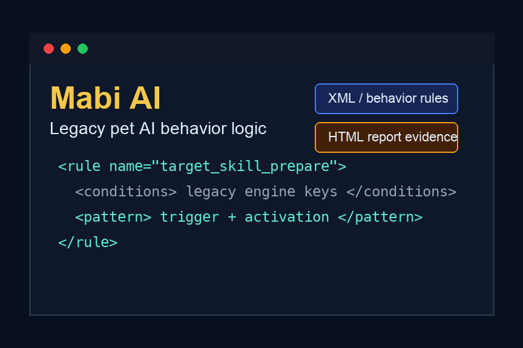

Featured AI project
Mabi AI
A legacy Mabinogi pet AI project focused on rule-based behavior logic, XML-style rules, and strict compatibility with an older game AI engine.

Problem
Mabinogi pet AI rules need to work inside a strict legacy engine where small naming, trigger, or rule-order changes can break behavior or deployment.
Process
The project documented a rule-based workflow: preserve known working legacy behavior, describe event-condition-action rules, test behavior in game, and revise prompts when AI-generated logic drifted away from engine constraints.
Outcome
The evidence shows an AI-assisted legacy behavior-logic project centered on deterministic pet actions, XML-style rule blocks, compatibility checks, and human review of generated rules.
Video
The report and notebook remain the primary evidence. The video is included as supporting context for the project demonstration.